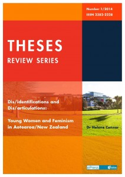
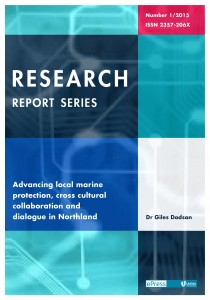
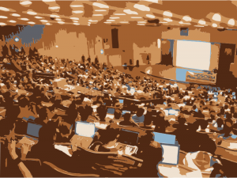
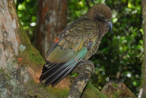

EPress: Open Access publishing at Unitec
BY ELIZABETH HERITAGE
I interviewed Editor-in-Chief Evangelia Papoutsaki and Editorial Assistant Louise Saunders of ePress, an Open Access scholarly publishing house at Unitec.
How did your Open Access philosophy develop?
The global political economy is one of the key barriers to human social progress. Information should be free like the air we breathe and not a market commodity with a profit attached to it.
At ePress we believe that knowledge should be accessible to all. Academics are paid by taxpayers to research and produce knowledge, and the idea that students and the general public must pay for that knowledge does not sit well with us. It should be available to anyone who has the desire to read and use it. Citizens have the right to learn; access to information and knowledge should not be through their wallets.
 Book cover designed for ePress by Penny Thomson. Licensed CC BY-NC
{kind=link}
How did ePress come to be set up?
EPress is an online, quality-assured, in-house publisher for authors and researchers working at, or associated with, Unitec Institute of Technology. As well as there being research produced at Unitec that needed a publishing home, there were other outputs such as performances, mixed media, design and art installations that all had potential as non-traditional publications.
The idea of ePress emerged out of a desire to harness the publishing potential of all these outputs by providing a platform from which they could be shared. Launched in late 2011, ePress started off with the more traditional conference proceedings and reports, and quickly grew to embrace eMedia and books. In 2014 ePress really hit its stride with the publication of two books (Press, Politics and People in Papua New Guinea 1950-1975 by Philip Cass and Ngā Reanga Youth Development Māori Styles by Josie Keelan), an edited collection (Communication Issues in Aotearoa New Zealand edited by Giles Dodson and Evangelia Papoutsaki), two wonderful eMedia (Rosebank: Cabbages, Horses and Science by Paul Woodruffe and The Moveable Feast Collective Teach Design by Susan Jowsey) as well publishing conference proceedings for the 31st Annual Society of Architectural Historians Australia and New Zealand (Translation edited by Christoph Schnoor).
At the beginning of 2015 ePress unveiled new layouts and cover art for our regular series; launched a new series titled Perspectives in Biosecurity Research Series edited by Dan Blanchon and Mel Galbraith; and announced the production of a forthcoming collection titled Conceptual Works in Sports Studies and edited by Lesley Ferkins and Mieke Sieuw. It’s going to be a big year at ePress!
 Book cover designed for ePress by Penny Thomson. Licensed CC BY-NC
{kind=link}
Have you noticed any changes over time in the academic perception of Open Access scholarly publishing?
Yes. The perception used to be very much one of scholarly snobbery. If you weren’t in the right journal, or published to certain standards, it was of no merit to academia. However, things are changing, and fast. The methods for producing knowledge are changing and so too should our method of dissemination. More and more scholars are accepting and embracing the idea that there are other ways to prepare, produce and disseminate information. EPress has a strong focus on eMedia publications and they are a great example of alternative ways to share that knowledge. With these methods have come new researchers, authors and producers who believe that Open Access is the way forward for them. This new way of thinking is producing some truly fun and unique publications that might not have found a home anywhere else. More traditional publishers would not have been able to control their distribution and make a profit.
 Book cover designed for ePress by Penny Thomson. Licensed CC BY-NC
Book cover designed for ePress by Penny Thomson. Licensed CC BY-NC
What has been your experience of publishing with a Creative Commons licence?
When authors submit to ePress we explain our processes and the Creative Commons licensing system. We automatically assign new publications with the Attribution-NonCommercial licence and give the authors time to investigate the other licences, should they wish to change. The response to the licensing, and the one we auto-select for them, has been well received by all of our authors. For those who are new to Creative Commons, they have really embraced the goals of Open Access publishing – though they are publishing with ePress so to an extent they are probably Open Access supporters already!
 Book cover designed for ePress by Penny Thomson. Licensed CC BY-NC
Book cover designed for ePress by Penny Thomson. Licensed CC BY-NC
Elizabeth Heritage is the Communications Lead at Creative Commons Aotearoa New Zealand.
Open Access and the PBRF
BY DEBORAH FITCHETT
So far at academic institutions, promoting Open Access has been seen primarily as a library concern, and reporting for the Performance-Based Research Fund (PBRF) primarily as being in the realm of the research office. But by working together there are a number of ways that Open Access and PBRF reporting can benefit each other.
Benefits of Open Access to the PBRF
-
The obvious benefit for the institution is the well-known citation advantage for papers available by either gold Open Access ("born" Open Access) or green Open Access (a version of the canonical toll-access paper is deposited in an OA repository). To the extent that PBRF scores depend on institutions being able to demonstrate the impact of their research, this citation advantage is worth money. Likewise, Open Access publications can raise the profile of early career researchers especially, opening up opportunities for national and international collaboration -- another factor that can demonstrate peer esteem for the researcher as PBRF portfolios are assessed.
-
A benefit to the PBRF process comes when considering the arduous tasks of output verification (within the institution) and auditing (at the national level). Verification is a painfully manual process of searching for each output to obtain evidence of its existence -- an official pdf from the publisher's website is preferred -- and confirm citation details. A well-established history of indexing makes citations for most journal articles fairly trivial to locate. But for disciplines where books and chapters are more common, or for researchers whose portfolios rely on conference papers, even tracking down the citation details can be an involved process -- or impossible, several years after a conference has removed them from its website. If these outputs were available Open Access, they would be far more quickly found, and untold hours of valuable staff time saved.
{kind=link}
Benefits of the PBRF to Open Access
- With this vast investment of staff hours in mind, many institutions attempt to merge the processes of verifying outputs for the PBRF and filling the institutional repository (IR). This might be done by manually forwarding metadata with located pdf fulltext to IR staff, or by an integrated system gathering and sharing metadata and fulltext in common. Provided author permission can be obtained, publisher policies are amenable, and/or an institutional mandate applies, this can be very successful at increasing the amount of literature available Open Access.
There are limitations. Metadata requirements differ for the different purposes. Worse, PBRF verification typically requires the published version of a paper, which copyright generally precludes the institutional repository from reproducing; whereas the institutional repository will often need an author's version, which is useless for verification purposes. One blunt solution can be to encourage researchers to submit all versions of their paper, and let support staff sort out which ones are needed where.
- Knowing all the benefits that Open Access provides for PBRF reporting and the resulting funding can make it easier to advocate for researcher and management support of Open Access initiatives. These might include advising researchers of high-impact Open Access journals in their fields that they could be publishing in; supporting the costs of Article Processing Charnges (APC) where other funding is unavailable; or even implementing an Open Access mandate across the institution.
Collaboration between the library and research office -- and, if implementing a new system, IT services -- isn't trivial. Like a three-legged stool, all need to be equal partners, communicating and appreciating the quite different languages, cultures and priorities of each team. But then it opens up scope for future collaboration when we come to look at other mutually beneficial issues like research data and funding grants.
Deborah Fitchett is Senior Advisor Digital Access in Lincoln University's Library, Teaching and Learning; has an abiding interest in Open Access; and blogs sporadically on her website.
Open Access to scholarly monographs
BY LUCY MONTGOMERY AND CHRISTINA EMERY
Open Access (OA) has never been hotter. New funding has become available from the Mellon Foundation (totalling $6 million) for innovative digital humanities projects -- some explicitly for OA, others with OA implicit in the project structure. University presses are launching their own OA publishing programmes. In January 2015, Geoffrey Crossick published his much-anticipated report to HEFCE on monographs and OA. Mandates for OA publishing are increasing globally. And of course, the findings of our own Knowledge Unlatched Pilot project were recently published, highlighting the success with which libraries and publishers can work together to create sustainable routes to OA for scholarly books.
Background
Specialist scholarly books, including monographs, allow researchers to present their work, pose questions and to test and extend areas of theory through long-form writing. In spite of the fact that research communities all over the world value monographs and depend heavily on them as a requirement of tenure and promotion in many disciplines, sales of this kind of book are in free fall, with some estimates suggesting declines of as much as 90% over 20 years (Willinsky 2006). Cash-strapped monograph publishers have found themselves caught in a negative cycle of increasing prices and falling sales, with few resources left to support experimentation, business model innovation or engagement with digital technology and OA.
In contrast to textbooks, which provide a broad overview of a field and are intended for a student audience, monographs present primary research and original scholarship, and their intended audience is generally other researchers. Having a book-length work published by a recognised scholarly press is understood as an important intellectual achievement (Adema & Ferwerda 2014) and the publication of a monograph serves as evidence of professional competence and is a requirement for tenure and promotion in many disciplines (Crow 2012; Williams et al. 2009).
In spite of their importance as a textual form through which new knowledge in the Humanities and Social Sciences is developed, certified and communicated among research communities across the globe, very few readers beyond the walls of the university are able to access these kinds of books. Books have been slower than journals to make a shift to digital formats (Adema 2010) and monographs are often available only in hardback. They are generally published in short print runs and their biggest market is university libraries in the United States and Western Europe, which pay between $50 and $250 per copy (Gasson 2004; Steele 2008). There is widespread consensus that sales of monographs are in decline: 20 years ago it was normal for monographs to sell several thousand copies and today, most will sell just a few hundred (Wasserman 1998; Bunz 2014; Williams et al. 2009). At a moment when new technologies should be lowering barriers to access, monographs remain both closed and expensive.
Knowledge Unlatched Pilot
Knowledge Unlatched (KU) was established as a not-for-profit company in 2012 with the goal of enabling a more effective monograph ecosystem. During the 2013--14 Knowledge Unlatched Pilot, publishers were invited to offer new titles to library communities on a novel basis: agreeing to make them OA immediately upon publication in return for a Title Fee paid by a consortium of libraries. Libraries from all over the world were invited to join together to share the costs of the Title Fee, securing access not just for their own users, but also for readers everywhere. Because the Title Fee was a fixed amount, the more libraries agreed to take part in the programme, the lower the cost became for each library.
Christina Emery of Knowledge Unlatched. Copyright Taya Uddin Photography
{kind=link}
The KU team set out to enable positive change in a complex publishing ecosystem. We believed that developing coordinating infrastructure that built on the global nature of scholarly communication and the network effects of OA could help markets for specialist scholarly books to function more effectively. Creating conditions that encourage publishers to incorporate OA into their business models and providing libraries with an opportunity to maximise the positive impact of spending on books were key goals of the project. As such, the KU Proof-of-Concept Pilot deliberately involved monograph stakeholders from across the ecosystem: research funders, authors, publishers, digital intermediaries, libraries and readers all played a role.
In October 2013 libraries from around the world were invited to pledge a maximum of $1,680 towards securing OA for 28 new Humanities and Social Science research titles from 13 recognised scholarly publishers. If at least 200 libraries agreed to contribute towards the cost of the collection, publishers would be paid a Title Fee in return for making the books available on Creative Commons licences as soon as was practicable once the books had been published (without an embargo). If fewer than 200 libraries joined, the books would still be published, but they would remain closed. The Pilot was an unqualified success: 297 libraries from 24 countries pledged their support for the collection, exceeding the original 200-library target by almost 50%. This reduced the cost for every participating library from $1,680 to $1,195. Libraries paid less than $43 to unlatch each book, compared to an average cover price of $95. Participating publishers received an average Title Fee payment of $12,000 for each of the books, minus any deductions made in recognition of additional copies purchased by libraries. In the collection’s first 24 weeks online, 12,763 downloads from 138 countries were recorded.
 Lucy Montgomery of Curtin University. Licensed CC BY
Lucy Montgomery of Curtin University. Licensed CC BY
The 2013--14 KU Pilot established that authors, librarians, publishers and research funders can work together to support OA for book-length scholarly publications, and that doing so lowers the cost of securing access for libraries and helps publishers to manage the risks associated with publishing monographs. It also demonstrated demand among libraries for cost-effective opportunities to support OA for books, as well as publisher appetite for market-based alternatives to author-side OA publishing fees. Usage data from the Pilot Collection is already providing insight into the truly global impact of the project and the capacity of libraries to enable access for readers located far beyond their own institutions.
However, the limited scope of the Pilot necessarily left some important issues unresolved. Additional investment will be required to enable the project to be scaled and expanded. More work will need to be done to ensure that KU represents a practical option for librarians struggling to manage complex supply chains and workflows; questions about how KU might be shaped in order to enable diversity in the scholarly book landscape are yet to be addressed; further study is needed in order to explore the issues around multiple format charging; and more work is needed in order to understand how the KU model might fit with the value propositions and workflows of ‘pure OA’ publishers.
The future?
It is becoming increasingly evident that in order to tackle the challenges of scholarly publishing, various business models are needed to overcome these wide-ranging hurdles, meaning that each stakeholder will need to be flexible as different processes run concurrently.
This makes taking the next steps imperative. Fortunately we can get there in cost-effective and sustainable ways. As Crossick says, ‘the direction of travel’ to OA is clear. Just how long that journey might be and how many pathways need to be hacked through the jungle may not be known today, but the prize is within sight. Monographs, the foundational works in so many subject areas, have an exciting future as they become ever more widely available to people all around the world through Open Access.
Indeed, Knowledge Unlatched is seeing the advantages of opening up access to books: there were over 23,000 downloads of the 28 titles in the Pilot Collection in at least 154 countries since mid-March 2014.
Lucy Montgomery is the Principal Research Fellow at the Center for Culture and Technology at Curtin University in Western Australia. Christina Emery is the Project Coordinator at Knowledge Unlatched in London.
References
Embargoes in academic publishing
BY ANTON ANGELO
As the manager of an Institutional Repository, one of my regular tasks is to tell enquirers why they can’t download a PDF that they have found with Google from our collection. The work is there, but we have had to embargo it.
It’s becoming more common for us to embargo work. There are a multitude of reasons why we do so that, when put together, give a view into the process of scholarly publishing from economic, personal and professional perspectives. But are academic publishing embargoes just delaying the inevitable?
We hold two main types of work. The first type is theses, dissertations and research reports: things that have been created for a qualification. I’m dead impressed with anyone who has finished a thesis -- it’s a masterpiece in the old sense -- the work you need to have done to call yourself a master in your trade, signalling the end of your apprenticeship. Even the 4th-year student work that departments submit is good stuff, on a huge range of topics from fire engineering (this guy got a degree by burning couches) to history. The other sort of work we collect is research outputs by staff and students: mostly manuscript, final versions of journal articles.
Why would anyone want to delay public access to this work? With anything as complex as research there are always going to be a few individual circumstances that are not easily put into categories, but the main ones are:
Shyness
A thesis can be the first time someone writes for a public audience. All through an academic career you write, it gets read by one or two people, and that’s it. Filed, or thrown away. For some great work, this is a terrible shame, which is why we accept all sorts of student work, as long as the quality is assured. Nonetheless, people are nervous about their work, and simple self-effacement can lead students to embargo their work for as long as possible. Our response is that if your work passed, and you were credited with the qualification, then you should be proud of your work, not embarrassed.
Concerns about plagiarism
Theses are great resources for researchers -- I’ve written about this before -- just the literature review or the bibliography is a great primer in a field. The ideas in the thesis can’t be protected though, and authors are worried that they might get stolen. The answer to this is simple: if you don’t put up a version of record, you can’t establish your primacy in the first place.
Publishers won’t publish me if the same data is in my thesis
This is by far the most common reason for embargoes on theses. I wish I had some more-than-anecdotal evidence that this was true. Some research has been done in the social sciences, and has shown that a publishable book is a very different thing to a thesis (Ramirez et al, 2012). Even then, having an Open Access electronic version of a scholarly monograph has also been shown to increase the sales of print copies of exactly the same thing! I’m not aware of similar research done in STEM, but the speed of scientific publishing is such that papers are now normally lined up before the thesis has even been submitted for marking. If readers have evidence of this, I’d really like to hear about it.
I have a contractual obligation to embargo this work
For journal articles, having an embargo on the version in the repository is often demanded by publishers. Repositories form a very potent threat to the traditional toll-based publishers -- why would you pay millions of dollars in subscriptions to journals if the same work was available for free? Embargoes are one of the contractual tools publishers use to fight the creeping advance of Open Access, along with many other stipulations designed to make an repository version of an article as unappealing as possible. When the US government demanded that publicly funded federal research be openly accessible, the stoush about embargo lengths (publishers demanded 2 years, and were fought down to 12 months) was protracted and bitter.
What authors don’t realise is that they have all the power. Once the paper has been accepted, all contractual agreements are up for grabs -- obviously the journal wants the paper, it will sell more subscriptions. So why would an author want to make a fuss and reduce the embargo? Because they will get more citations for their work, which is how you win at the current academic game. A lot of recent work now confirms a considerable advantage for papers that are published Open Access, and early. I won’t cite specific papers, but point you to a website dedicated to this, as new work is occurring constantly.
In short, there are few good reasons to embargo your research (though there will always be exceptions). Publishing early, and with a license that allows your work to find its fullest audience, is the best use of the resource that has gone into your research, and will pay you the best reward.
Anton Angelo is the Repository Manager at the University of Canterbury Library, and a member of the NZCommons editorial board.
Reference:
Ramirez, M. L., Dalton, J. T., McMillan, G., Read, M., & Seamans, N. H. (2012). Do open access electronic theses and dissertations diminish publishing opportunities in the social sciences and humanities? College & Research Libraries. Retrieved from http://crl.acrl.org/content/early/2012/04/05/crl-356.full.pdf+html
Open Access to conference literature
BY DEBORAH FITCHETT
Conferences are where a huge amount of research gets its first public airing. And yet conference papers are notoriously hard to track down after the fact.
Some conferences still publish their proceedings in print monographs; some on CD, DVD, or USB stick; an increasing number in special issues of journals. Some publish them on websites that may or may not last beyond the year. Access may be limited to attendees or to database subscribers. Many don't publish at all, leaving it up to the author to remember and find the time to self-deposit.
Meanwhile the Open Access movement has paid remarkably little attention to the potential of conference outputs. OpCit's open access citation advantage bibliography (now maintained by SPARC Europe) includes 32 papers sourced from conferences -- but only two about conferences. The Public Knowledge Project's conferences are full to the brim with papers about the use of Open Journal System (OJS), but not even every year do they have a single paper about Open Conference System (OCS). At least they make these papers Open Access, though. Many Open Access conferences don't.
 Conference from OpenClipArt
{kind=link}
Why is this? Many argue that conference papers just aren't that valuable. They're not peer-reviewed (though some are) and often represent early results that will be further developed and presented formally in journals (though many aren't). Certainly they're cited less, but is this just a case of academic sour grapes: we can't find them so we say we never really wanted them anyway?
Have publishers, libraries and Open Access advocates ignored conferences because they're too hard -- or are they too hard because we've ignored them?
Are we being responsible in withholding early and thus potentially unreliable results from the public, or are we being anti-democratic? If we care about public access to publicly funded research we should be asking these questions.
So what can we do? It's a big issue, but there are some obvious steps.
Conference organisers: Think about open publication of the papers and posters presented. There's heaps of software out there to help manage this.
Libraries: If you support your academic community with OJS, look into whether there’d be interest in you supporting them with OCS too.
Authors: If the conference isn't publishing your paper, or doesn't have a clear plan for ongoing hosting, put it in your institutional repository, a disciplinary archive, or figshare, so researchers will be able to find (and cite) it.
These are only stop-gap solutions. In the long term what I think we really need is a global, multi-disciplinary archive for all conference outputs -- abstracts, papers, slides, posters, videos, hackathon code -- which may allow author self-deposit but whose main focus is on actively soliciting for bulk-deposit from entire conferences. If you agree (or disagree!) contact me: this is a topic I'm continuing to research.
Deborah Fitchett is Senior Advisor Digital Access in Lincoln University's Library, Teaching and Learning; has an abiding interest in Open Access; and blogs sporadically on her website.
Fostering Open Science, Open Data & Reproducibility
BY NICOLE NOGOY
What do New Zealand's beautiful indigenous birds the Rifleman and Kea have in common with Open Data? Their newly sequenced genomes are among the first in the world to be released under a Creative Commons CC0 waiver.
 Buller, Walter Lawry, A History of the Birds of New Zealand, 2nd edition. J.G. Keulemans delt & lith, printed by Judd & Co., 1888. Tītitipounamu, Rifleman, female at left and male at right. Endemic to New Zealand. Creative Commons Public Domain (via Wikimedia Commons)
Buller, Walter Lawry, A History of the Birds of New Zealand, 2nd edition. J.G. Keulemans delt & lith, printed by Judd & Co., 1888. Tītitipounamu, Rifleman, female at left and male at right. Endemic to New Zealand. Creative Commons Public Domain (via Wikimedia Commons)
Science as a whole is progressing fast due to the advancement in new technologies and data-driven approaches. Because of this, researchers worldwide are experiencing the excitement of the benefits -- as well as the challenges -- of “big data”, particularly due to technical and cultural issues handling what some term the “data deluge”. Due in part to larger volumes of data supporting work, a growing trend of papers being retracted, (which is, perhaps counter-intuitively, strongly correlated with the journal impact factor), has been observed and continues to rise, partly due to a growing reproducibility gap. One way to address this problem is through Open Access to research and data utilising Creative Commons Attribution licenses (CC BY) for text and CC0 waivers for data, as well as data integration and online tools.
I am fortunate enough to work remotely (based in Wellington, New Zealand) as the Commissioning Editor of GigaScience, a journal co-published by the BGI, the world’s largest genomics organisation, and the Open Access pioneer BioMed Central. GigaScience publishes open access 'big-data' studies from the entire spectrum of life and biomedical sciences, whose goal is to promote open science, transparency and reproducibility. The scope of GigaScience covers the issues producing and handling large-scale biological and biomedical data, and provides resources and a forum for data producers and the open science community.
At GigaScience, being a true Open Access journal, all our textual content (such as blogs, and open peer reviewer reports) is published under a CC BY 4.0 Attribution licence, and our data is CC0 -- maximising its reuse and setting our content free in the commons. This has only allowed us to do great things; for example, our first dataset was the genome sequence of the deadline E. Coli bug that spread throughout Germany and led to 53 total deaths in 2011. The release of this dataset in the public domain rapidly allowed researchers around the world to begin attempts to understand the pathogenic features of the disease; within days people were swapping results on Twitter with all results archived in GitHub. As a pioneering example of people crowdsourcing results on Twitter -- bloggers have asked; ‘is this the first “Tweenome”?’ -- this has subsequently been used as an example for science policy in Europe (and hopefully New Zealand). The Royal Society in the UK used the E. coli CC0 data release and crowdsourcing as an example of “the power of intelligently open data”, and highlighted it on the cover of its influential “Science as an Open Enterprise” report.
On World Hunger Day 2014, GigaScience released its largest dataset to date, 3,000 Rice Genomes (13.4 TB of CC0 data). This dataset quadrupled the amount of rice genomic data in the public domain. This exceptionally large dataset was produced by a collaboration between the International Rice Research Institute (IRRI), the Chinese Academy of Agricultural Sciences (CAAS), and BGI -- funded by the Bill and Melinda Gates Foundation. A major goal of this project is to develop resources that will aid in improving global food security, especially in the poorest areas of the world.
If you thought we were only about genomic data, well you’re wrong. GigaScience also publishes a variety of different data types from Neuroscience (fMRI and EEG), to large-scale imaging data. Our high-resolution 3D MicroCT imaging datasets of an earth worm, aka “cyber worm", was recently featured in Scientific American and represents the future of “big data” cyber taxonomy and comparative morphology. Being Open Access, the stunning high-resolution 3D images, videos and interactive models also can be used as teaching aids and make fantastic resources for understanding worm anatomy -- a method that can enliven zoology.
https://www.youtube.com/watch?v=vW62-2h5RU8
Having me based in Wellington has enabled GigaScience to reach out to Kiwi researchers and to promote more transparency in science and reproducibility through open peer review and open data. We do this in order to break through a rather frustrating and New Zealand-prominent cultural hurdle, known as the ‘big “I” in science” -- the fear of releasing one’s data in the public domain.
Despite the cultural hurdles of many researchers being protective of their data, it was exciting to see the involvement of two New Zealand researchers from the University of Canterbury, Dr Paul Gardner and Dr Tammy Steeves, in the Avian Phylogenomics project. This was a massive international effort involving more than 200 scientists that looked at how modern birds evolved from the termination of dinosaurs by a meteorite 66 million years ago. GigaScience and its database, GigaDB, hosts several large bird genome assembly datasets (including Kea and Rifleman) from this project in the public domain under the CC0 waiver.
 Piotr Zurek - Kea (Nestor notabilis) (2007). Creative Commons Attribution-Share Alike 2.0 Generic license (via Wikimedia Commons)
{kind=link}
Dr Gardener stated in a news piece in Voxy that “ultimately, we want to preserve the genetic diversity of threatened species so they have the ability to adapt to environmental change’’ and Dr Steeves stated that “she is confident the publication of 45 new bird genomes will lead to a surge of conservation genomics research in New Zealand.”
The involvement of Drs Gardner and Steeves in such a high-profile international project is paving the way for a new era of bird conservation and biodiversity research in New Zealand. GigaScience hopes that other researchers involved in New Zealand-based genome projects, such as the Tuatara and Kakapo, are inspired to follow suit.
There will also be vast amounts of (hopefully) open biodiversity data to come, as projects like the New Zealand Genomic Observatory aim to digitise and capture molecular information on all of the terrestrial species in well-defined New Zealand model ecosystems.
Another major goal of GigaScience is transparency and one of the ways the journal achieves this is through open peer review. However, we have taken it one step further – in June 2014 we partnered with Publons, a Wellington-based start-up company that also happens to be the world’s largest open peer-review platform, promoting transparency of research and giving peer reviewers due credit for their hard work. By having all our peer reviews available under a CC-BY licence, we can promote these efforts and already see positive examples of content reuse.
Releasing data, more open science and better transparency only means great things for researchers and can benefit everyone. If you want to know more about Open Access, Open Science, Open Data and Reproducibility, come join me and the BioMed Central Team at the BioMed Central Roadshow in Auckland on February 26, 2015. Registration is free.
References:
http://www.voxy.co.nz/national/canterbury-researchers-part-bird-evolution-project/5/210009
Zhang, G; Li,B ; Li,C ; Gilbert,T; Jarvis,E; The Avian Genome Consortium; Wang,J (2014): Genomic data of the Rifleman (Acanthisitta chloris). GigaScience Database. http://dx.doi.org/10.5524/101015
Zhang, G; Li,B ; Li,C ; Gilbert,T; Jarvis,E; The Avian Genome Consortium; Wang,J (2014): Genomic data of the Kea (Nestor notabilis). GigaScience Database. http://dx.doi.org/10.5524/101031
Dr Nicole Nogoy is the Commissioning Editor of GigaScience and an Open Access, Open Data advocate.
Open Access publishing in the UK
BY RUPERT GATTI
This month we are featuring a series of articles from authors around the world on the them of Open Access to Research. This article by Dr Rupert Gatti originally appeared in The Guardian.
While academia is in the midst of a general funding crisis, multinational publishing houses are making vast profits from disseminating publicly funded research. New Open Access publishing models provide cost-efficient methods for disseminating research findings, eradicate excess profits by publishers and massively widen the readership of scholarly works. The UK government recognises this but their current reform agenda is nowhere near bold enough.
Academics as a rule do not write their books to make money — in fact, most receive only token royalties for their work. They do it to satisfy research assessments, to get hired and promoted and, most of all, to inform readers, spark debate, and contribute to the intellectual richness of their discipline. Commercial publishers reap high profits while putting up several barriers to the dissemination of research results. They do this in several ways: firstly, by imposing restrictions on copyright; secondly, by deciding which areas of research reach publication — a decision often based on marketing considerations that penalise cutting-edge and niche subjects. And thirdly, by imposing high prices on readers and libraries in order to maintain high profits and an obsolete infrastructure. Moreover, publishers increasingly bundle their numerous services into single large dissemination packages (so-called ‘Big Deals’), thus extracting large profits from libraries and universities while further restricting access to research by readers outside the academic community. The average price for an academic book is now around £50, with total sales running at around only 200 or 300 per title globally, predominantly to libraries in the US.
We have reached a point where university libraries cannot afford to buy access to the research done by scholars in their own institutions, as journal costs are now too expensive even for the wealthiest universities.
The report by Dame Janet Finch and subsequent new policies announced by the UK Research Councils (RCUK) fully support Open Access publication for all UK publicly funded research. While these are important steps in the right direction, the Finch recommendations and RCUK policies fall well short of pushing through the wholesale reforms required to make Open Access publishing the prime outlet for research results. The Finch/RCUK approach sustains the existing publishing landscape in journal publishing: the provision of Open Access articles would be paid for by the author instead of by the reader. Whilst this will certainly force publishers and researchers to make their work available to readers for free, it will be down to the existing publishers to set the price authors are required to pay. This would allow commercial publishers to maintain their exorbitant profit margins at the expense of the taxpayer and academic research budgets — albeit through a different payment channel (i.e. author charges rather than reader charges). It will also introduce a new series of publishing distortions. Researchers working at institutions with large budgets to pay for the dissemination of their staff's work will have access to the top journals. Internal rationing of available publishing funds may favour some researchers over others.
And these distortions will be exacerbated even further when it comes to the publication of monographs, where publishing charges are likely to be even higher. In fact the Finch Report says very little of book publishing, concluding that “it is difficult to encompass monographs within the discussion about promoting wider access to publications”. Despite the progress with scientific journals, there are very few viable Open Access publishers in the Humanities and Social Sciences, especially when it comes to publishing entire books.
Yet there is a simple solution available. It is time for members of the scholarly community to stop waiting for government legislation, funders or publishers to wholeheartedly embrace Open Access, and to recognise that commercial publishers are not required in the process of assessing quality or disseminating research findings -- in fact, that they can take matters into their own hands. Digital publishing has changed the way books are produced and distributed. Scholars are accessing information increasingly (or, in the case of most undergraduates, exclusively) online. We no longer need expensive printing and distribution networks: the Internet provides an instant, global and cheap publishing platform.
CC BY Dr Rupert Gatti
I have been part of a group of academics in Cambridge and London who were frustrated by the commercial publishers’ inability to adopt an Open Access model. We set out to discover whether Open Access could be a sustainable model for publication, and founded Open Book Publishers in 2008. In a small team, and on a shoe-string budget, we publish high-quality, peer-reviewed, Open Access monographs in the Humanities and Social Sciences. We do this not by charging authors, but through a ‘freemium’ model: we make all of our monographs freely readable online, but, to cover our modest costs, charge a reasonable price for printed editions and certain digital formats. The model is incredibly fast and cost effective, and allows us to retain the quality and academic rigour of a traditional university press.
Our model is now well-honed and successfully spreading knowledge around the world: our books are currently averaging around 500 views per month, which is more than most printed academic books see in an entire lifetime. They are accessed by people in over 180 countries (most academic books are only available in Western university libraries), with large numbers coming from the developing world.
Of course ours is not the only way ahead for OA publishing in the humanities and social sciences, but by providing a sustainable model we are hoping that other academics and institutions will take note and feel emboldened to launch similar initiatives. There's no reason why there shouldn't be a creditable Open Access book publisher in every university around the world, but it is going to require a collective shift in the academic mind-set. And an important part of this will be for academic institutions (appointment boards and libraries) to recognise the changing world of publishing and the active role they can play in it. And for funders to recognise that sustaining a publishing model which is obsolete and costly stifles industrial innovation. Our once beloved university presses used to perform a necessary and noble service, but they are no longer serving our needs. The future of our work’s dissemination is in our own hands — precisely where it should be. The question is whether we are prepared to hold on to it.
Dr. Rupert Gatti is a co-founder and the third Director of Open Book Publishers. He is a Fellow of Trinity College, Cambridge, where he is a Director of Studies in Economics. His published academic work includes microeconomic analysis of competition in online markets, game theory and search theory. He has held visiting positions at MIT and University of Florence, acted as an Economic Advisor on several EU competition studies, is on the advisory board of a range of Open Access initiatives and is a frequently invited speaker on the OA movement.
Rifleman
Buller, Walter Lawry, A History of the Birds of New Zealand, 2nd edition. J.G. Keulemans delt & lith, printed by Judd & Co., 1888. Tītitipounamu, Rifleman, female at left and male at right. Endemic to New Zealand. Creative Commons Public Domain (via Wikimedia Commons)Anatomy teaching model patterns licensed with CC
BY ELIZABETH HERITAGE
Fieke Neuman is the Teaching Laboratory Manager at the Department of Anatomy Te Tari Kikokiko at the University of Otago Te Whare Wānanga o Otāgo. Using her background in fashion and design, she has created anatomy teaching models of various human body parts using fabric, metals, and other materials. She has recently released the patterns for these models under a Creative Commons Attribution-NonCommercial-ShareAlike licence. I interviewed Fieke about how and why she came to do this.
http://anatomy.otago.ac.nz/images/Patterns_for_Fabric_Anatomy_Teaching/BurlesqueBrainSequence.mp4
Burlesque Brain. Creators: Dr Christine Jasoni (initial idea and academic support), Fieke Neuman (patterns, sewing, floam). All from Department of Anatomy, University of Otago. Licensed CC BY-NC-SA.
How did it all start?
At the December 2012 combined AIAS/ANZACA (Australasian Institute of Anatomical Sciences / Australian & New Zealand Association of Clinical Anatomists) conference in Coogee I gave a talk about some fabric models I had made for teaching anatomy. I promised to send the patterns to people I'd talked to at the conference, once I'd sorted out copyright issues.
Was it a surprise to you to learn that you couldn't license the copyright to your work without the University's permission?
No. I'd sort of known of the University policy regarding intellectual property for decades, without considering that it would ever apply to me. Nowadays it is easy to check on this sort of thing as University policies can be viewed online.

Developing Heart. Creators: Dr Christine Jasoni (initial idea and academic support), Fieke Neuman (patterns, sewing, floam). All from Department of Anatomy, University of Otago. Licensed CC BY-NC-SA.
How did you talk about this with your colleagues?
We briefly discussed the possibility of selling the patterns but decided we would get more benefit, as a Department, by sharing them. Sharing meant using Creative Commons but it also meant getting formal permission from the University to give away the standard copyright (see Otago Intellectual Property Policy, section 4a). So I got permission in 2013 from my Head of Department and he wrote to to the PVC Health Sciences who also gave formal permission.
What made the Anatomy Department decide to share your patterns rather than sell them?
We recognised that it would require quite a bit of time, money and effort to set up the kind of system whereby you could make sales of such items possible -- more than could be returned by the process. I've run a fashion business in the past and know how difficult it is to make sales to cover all of the costs involved. On the other side of the coin, we strengthen our bonds to our community by being generous and not hiding away information that others could use.
What made you choose that particular Creative Commons licence?
We chose the CC BY-NC-SA licence as it allows others to remix, tweak, and build upon our work non-commercially, as long as they credit the originator and license their new creations under identical terms. It suits the spirit of the scientific and teaching community that we are a part of.
How did you hear about Creative Commons originally?
Internet browsing, National Radio, a review magazine that I subscribe to … It seems to be one of those things that's just in the air. Refreshingly different from the traditional way of doing things.
Are there any other resources that you or your colleagues are thinking of licensing under CC?
Early days yet. I'm sure other people in our department will be inspired once they see that it can be done.
Elizabeth Heritage is the Communications Lead at Creative Commons Aotearoa New Zealand.
Except where otherwise noted, copyright content on this site is licensed under a Creative Commons Attribution 4.0 International Licence.